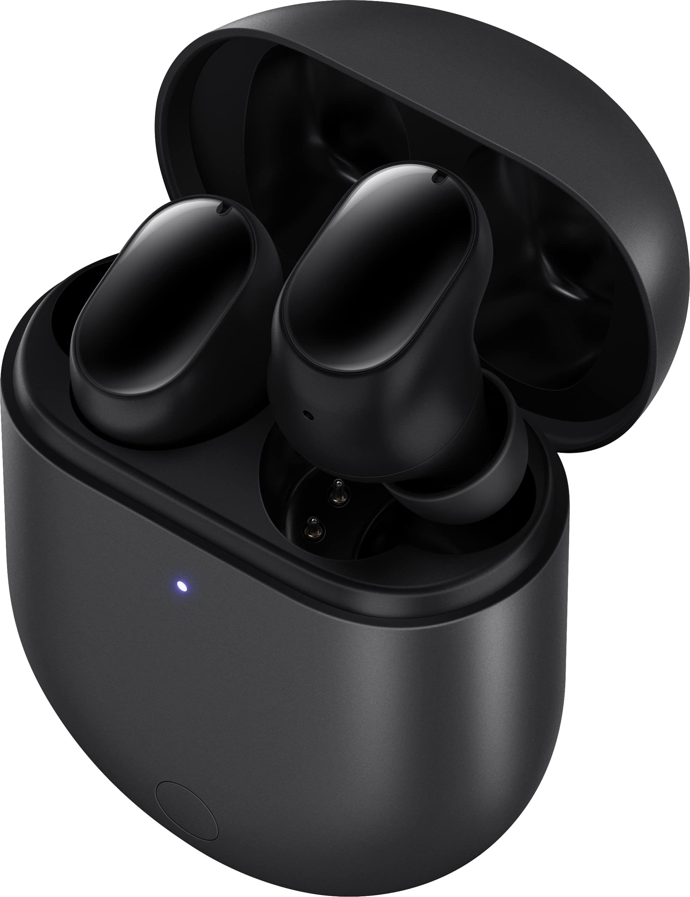

Redmi Airdots 3 Pro:
Descrição:

Redmi Buds / Airdots 3 Pro: Cancelamento de Ruído AI; Latência 69ms Super baixa; Suporte carregamento sem fio
Peso: auriculares simples (4,9g) / total :( 55g)
Tamanho: 25.4*20.3*21.3mm (earbuds únicos) / 65*48*26mm (caixa de carregamento)
Motorista: 9mm
Frequência Resposta Range: 20 - 20KHz
Sensibilidade do microfone: 35dBv/Pa
Codecs: AAC
Versão Bluetooth: 5.2, Alcance: 10m
Bateria Capacidade: 35mAh(Earbuds)/470mAh (Carregamento Case)
Tempo de reprodução (50% volume): 6h (fones)/28h (com estojo de carregamento)
Carregamento Porto: USB Tipo C
Nível impermeável: IPX4
Entrada: Caixa de carregamento 5V --- 0.5A MAX (com fio)/fones 5V --- 120mA MAX (fones de ouvido únicos)
Impedância: 32Ω